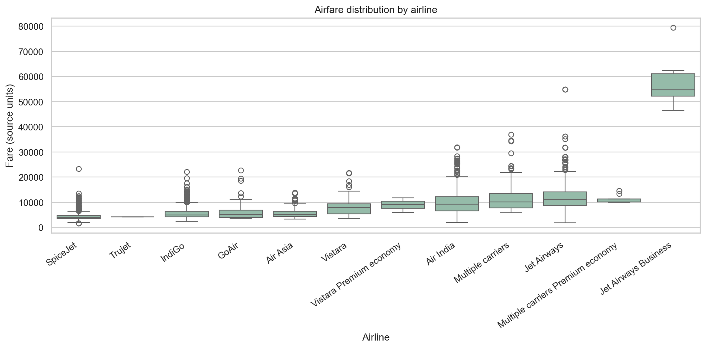
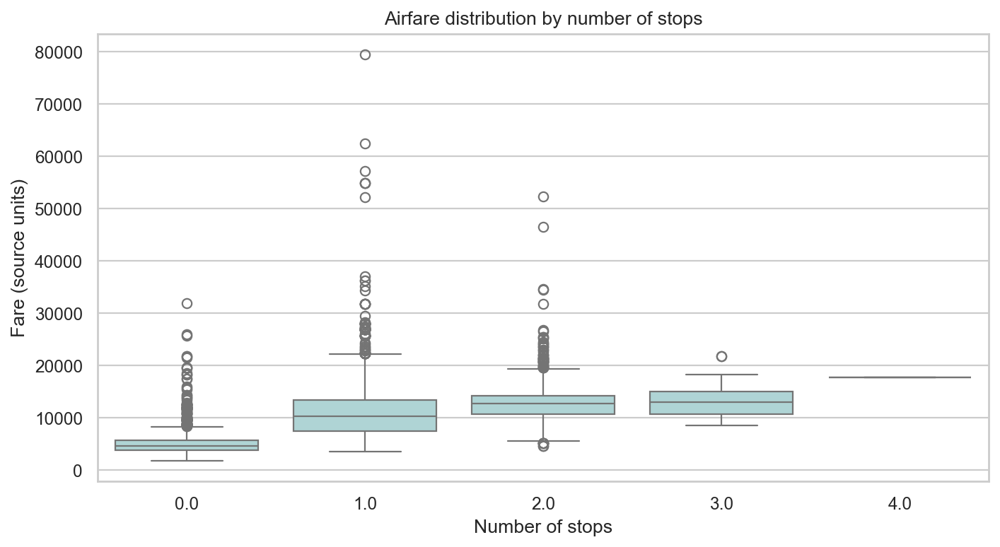
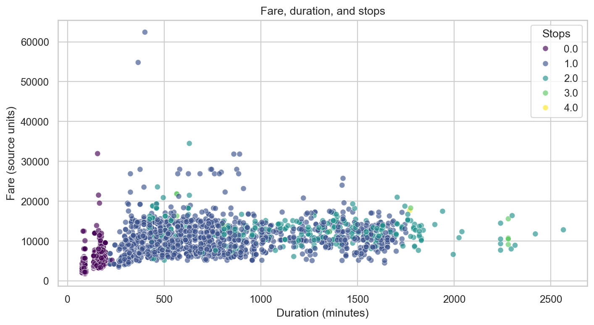
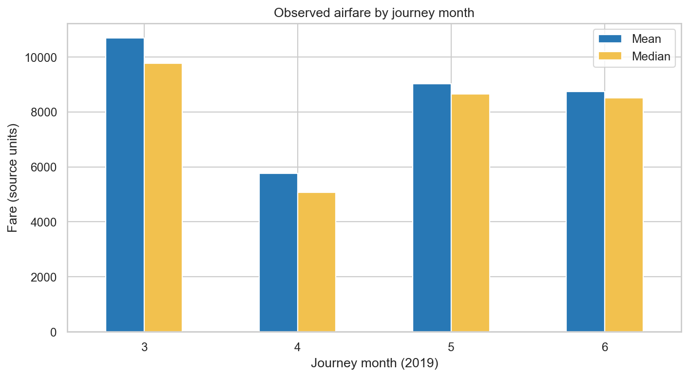
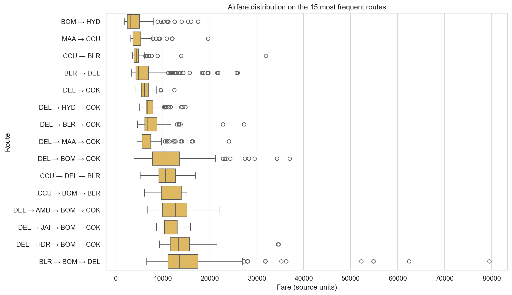

Complete empirical findings, descriptive statistics, 5-Fold cross-validation metrics, and high-resolution diagnostic graphs for the Airlytics (FlightIQ) project.
Empirical investigations across carrier brands, route topology, flight stops, duration elasticity, and calendar seasonality on 10,462 verified flight records.
Full-service carriers maintain high median fares and wide dispersion, whereas budget carriers strictly compress fares around tight lower interquartile bands.

Contrary to the consumer myth that layovers offer discounts, 1-stop and 2-stop flights incur massive step penalties due to compounded multi-segment operational costs.

Flight time shows strong non-linear monotonic correlation with price. Fares surge rapidly between 2 to 10 hours, then plateau once layover waiting time dominates.

Fares peak in March driven by Indian corporate financial year-end and spring festivals, drop sharply in April, and rise again for summer school holidays.

High-density business corridors command substantial fare premiums, whereas non-metro corridors and Chennai-originating routes observe lower baseline prices.
